Summary
This experiment investigates ids signature tuning. Latin Hypercube exploration of 4 IDS parameters for detection accuracy and packet drop rate.
The design varies 4 factors: signature pool size (sigs), ranging from 1000 to 50000, pattern match depth (bytes), ranging from 256 to 4096, stream reassembly depth (bytes), ranging from 4096 to 65536, and pcap buffer mb (MB), ranging from 64 to 1024. The goal is to optimize 2 responses: detection accuracy pct (%) (maximize) and packet drop rate (%) (minimize). Fixed conditions held constant across all runs include ids engine = suricata, ruleset = et_open.
Latin Hypercube Sampling was used to space 10 runs across the 4-dimensional factor space with good coverage and minimal gaps, making it ideal for computer experiments where the response surface may be complex.
Key Findings
For detection accuracy pct, the most influential factors were signature pool size (25.0%), pattern match depth (25.0%), stream reassembly depth (25.0%). The best observed value was 88.0 (at signature pool size = 29132.6, pattern match depth = 3194.63, stream reassembly depth = 57477.2).
For packet drop rate, the most influential factors were signature pool size (25.0%), pattern match depth (25.0%), stream reassembly depth (25.0%). The best observed value was -0.53 (at signature pool size = 9412.85, pattern match depth = 2491.25, stream reassembly depth = 10640.2).
Recommended Next Steps
- Consider whether any fixed factors should be varied in a future study.
Experimental Setup
Factors
| Factor | Low | High | Unit |
|---|
signature_pool_size | 1000 | 50000 | sigs |
pattern_match_depth | 256 | 4096 | bytes |
stream_reassembly_depth | 4096 | 65536 | bytes |
pcap_buffer_mb | 64 | 1024 | MB |
Fixed: ids_engine = suricata, ruleset = et_open
Responses
| Response | Direction | Unit |
|---|
detection_accuracy_pct | ↑ maximize | % |
packet_drop_rate | ↓ minimize | % |
Configuration
{
"metadata": {
"name": "IDS Signature Tuning",
"description": "Latin Hypercube exploration of 4 IDS parameters for detection accuracy and packet drop rate"
},
"factors": [
{
"name": "signature_pool_size",
"levels": [
"1000",
"50000"
],
"type": "continuous",
"unit": "sigs"
},
{
"name": "pattern_match_depth",
"levels": [
"256",
"4096"
],
"type": "continuous",
"unit": "bytes"
},
{
"name": "stream_reassembly_depth",
"levels": [
"4096",
"65536"
],
"type": "continuous",
"unit": "bytes"
},
{
"name": "pcap_buffer_mb",
"levels": [
"64",
"1024"
],
"type": "continuous",
"unit": "MB"
}
],
"fixed_factors": {
"ids_engine": "suricata",
"ruleset": "et_open"
},
"responses": [
{
"name": "detection_accuracy_pct",
"optimize": "maximize",
"unit": "%"
},
{
"name": "packet_drop_rate",
"optimize": "minimize",
"unit": "%"
}
],
"settings": {
"operation": "latin_hypercube",
"test_script": "use_cases/63_ids_signature_tuning/sim.sh"
}
}
Experimental Matrix
The Latin Hypercube Design produces 10 runs. Each row is one experiment with specific factor settings.
| Run | signature_pool_size | pattern_match_depth | stream_reassembly_depth | pcap_buffer_mb |
|---|
| 1 | 19010.9 | 2716.1 | 43613.1 | 140.448 |
| 2 | 31520 | 1346.16 | 17451.4 | 755.944 |
| 3 | 12716.2 | 796.975 | 33986 | 334.322 |
| 4 | 25809.7 | 4003.08 | 11448.3 | 720.766 |
| 5 | 36097.1 | 2180.25 | 55879.2 | 358.766 |
| 6 | 5404.43 | 3066.83 | 8652.88 | 207.907 |
| 7 | 10462.1 | 1500.08 | 38621.9 | 882.308 |
| 8 | 48219.1 | 2029.26 | 24062.7 | 616.804 |
| 9 | 23416.2 | 3334.42 | 47514.6 | 477.641 |
| 10 | 41767 | 596.333 | 60875.4 | 948.158 |
Step-by-Step Workflow
1
Preview the design
$ python doe.py info --config use_cases/63_ids_signature_tuning/config.json
2
Generate the runner script
$ python doe.py generate --config use_cases/63_ids_signature_tuning/config.json \
--output use_cases/63_ids_signature_tuning/results/run.sh --seed 42
3
Execute the experiments
$ bash use_cases/63_ids_signature_tuning/results/run.sh
4
Analyze results
$ python doe.py analyze --config use_cases/63_ids_signature_tuning/config.json
5
Get optimization recommendations
$ python doe.py optimize --config use_cases/63_ids_signature_tuning/config.json
6
Generate the HTML report
$ python doe.py report --config use_cases/63_ids_signature_tuning/config.json \
--output use_cases/63_ids_signature_tuning/results/report.html
Features Exercised
| Feature | Value |
|---|
| Design type | latin_hypercube |
| Factor types | continuous (all 4) |
| Arg style | double-dash |
| Responses | 2 (detection_accuracy_pct ↑, packet_drop_rate ↓) |
| Total runs | 10 |
Analysis Results
Generated from actual experiment runs using the DOE Helper Tool.
Response: detection_accuracy_pct
Top factors: signature_pool_size (25.0%), pattern_match_depth (25.0%), stream_reassembly_depth (25.0%).
Pareto Chart

Main Effects Plot
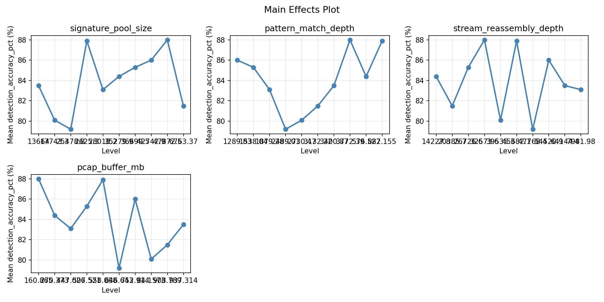
Response: packet_drop_rate
Top factors: signature_pool_size (25.0%), pattern_match_depth (25.0%), stream_reassembly_depth (25.0%).
Pareto Chart
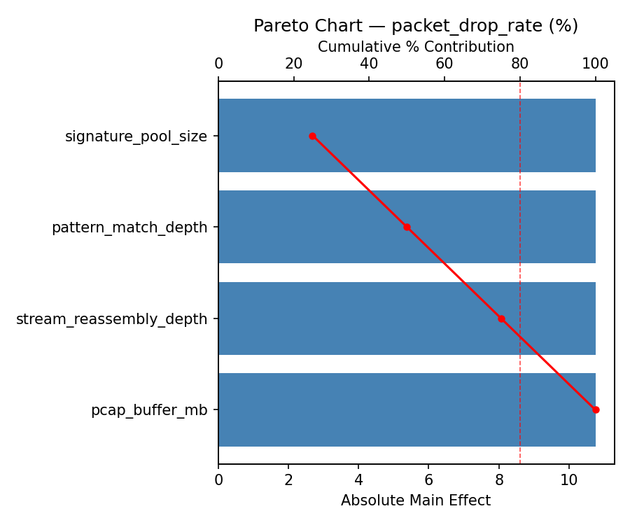
Main Effects Plot
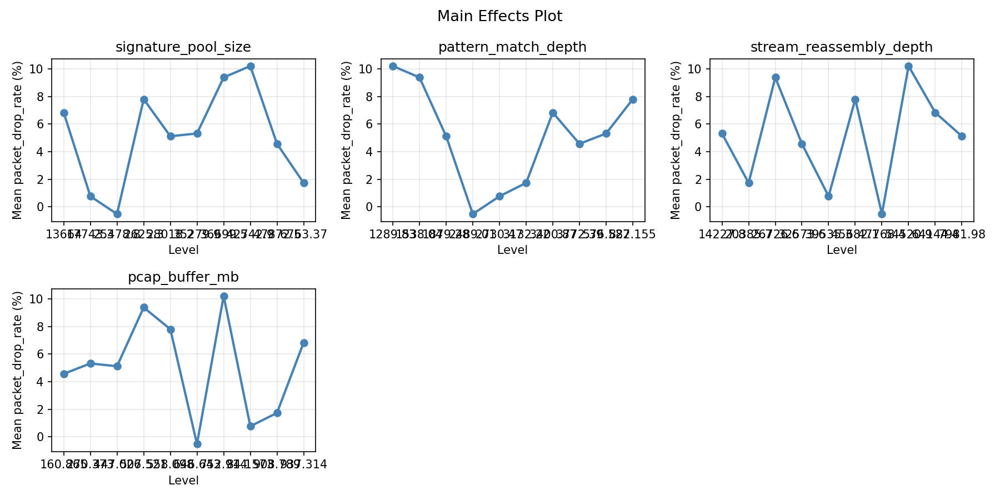
Response Surface Plots
3D surfaces fitted with quadratic RSM. Red dots are observed data points.
detection accuracy pct pattern match depth vs pcap buffer mb

detection accuracy pct pattern match depth vs stream reassembly depth

detection accuracy pct signature pool size vs pattern match depth
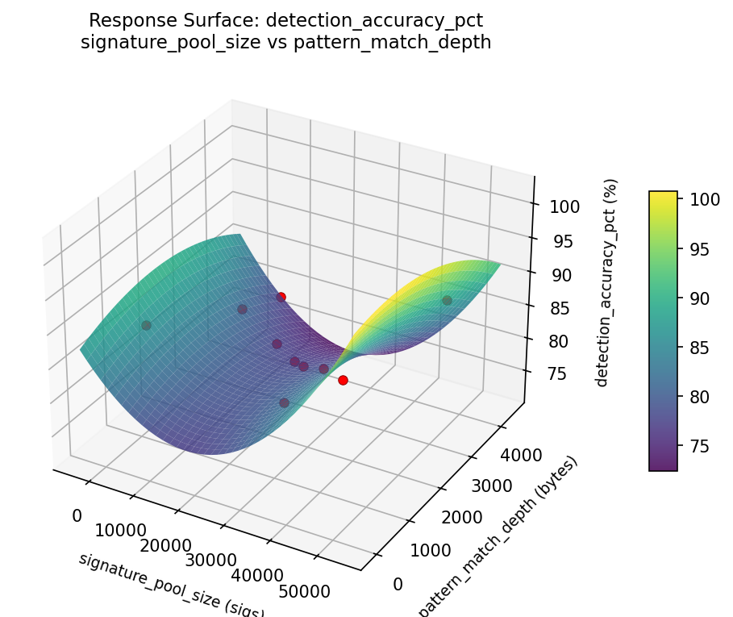
detection accuracy pct signature pool size vs pcap buffer mb
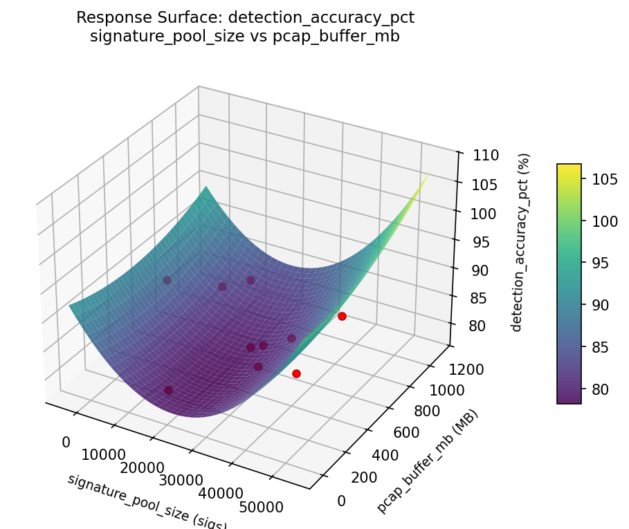
detection accuracy pct signature pool size vs stream reassembly depth
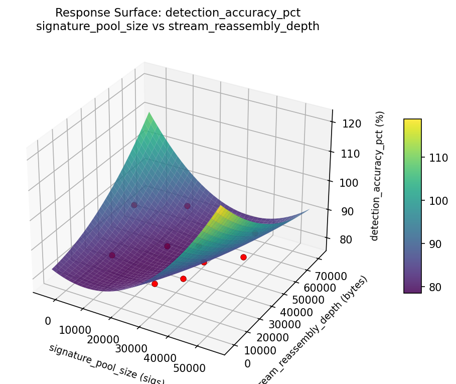
detection accuracy pct stream reassembly depth vs pcap buffer mb

packet drop rate pattern match depth vs pcap buffer mb
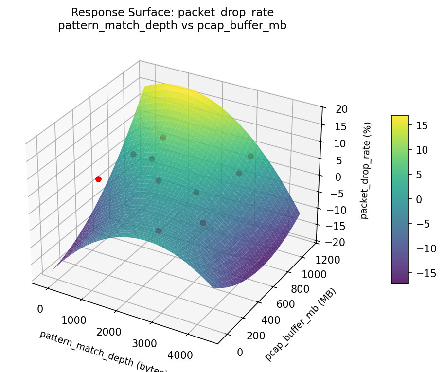
packet drop rate pattern match depth vs stream reassembly depth
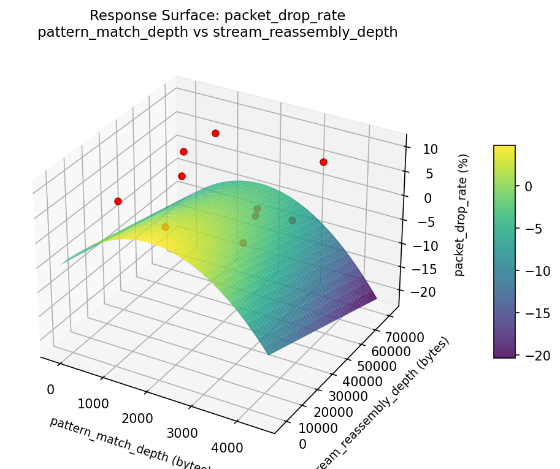
packet drop rate signature pool size vs pattern match depth
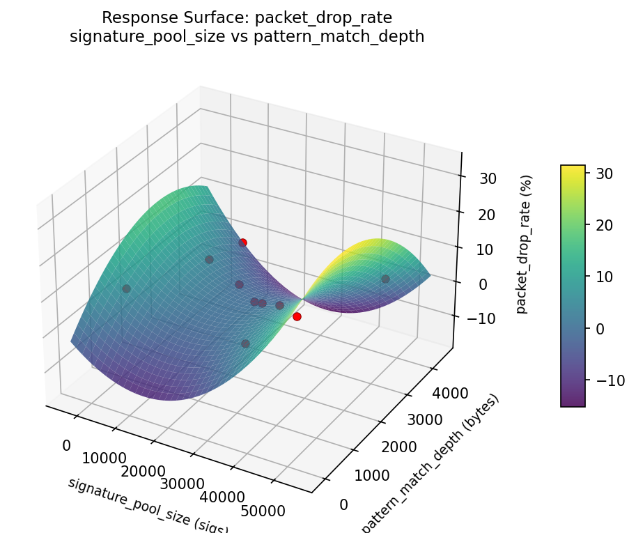
packet drop rate signature pool size vs pcap buffer mb

packet drop rate signature pool size vs stream reassembly depth
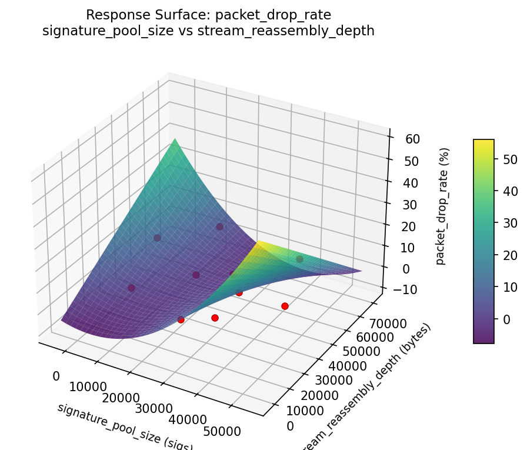
packet drop rate stream reassembly depth vs pcap buffer mb
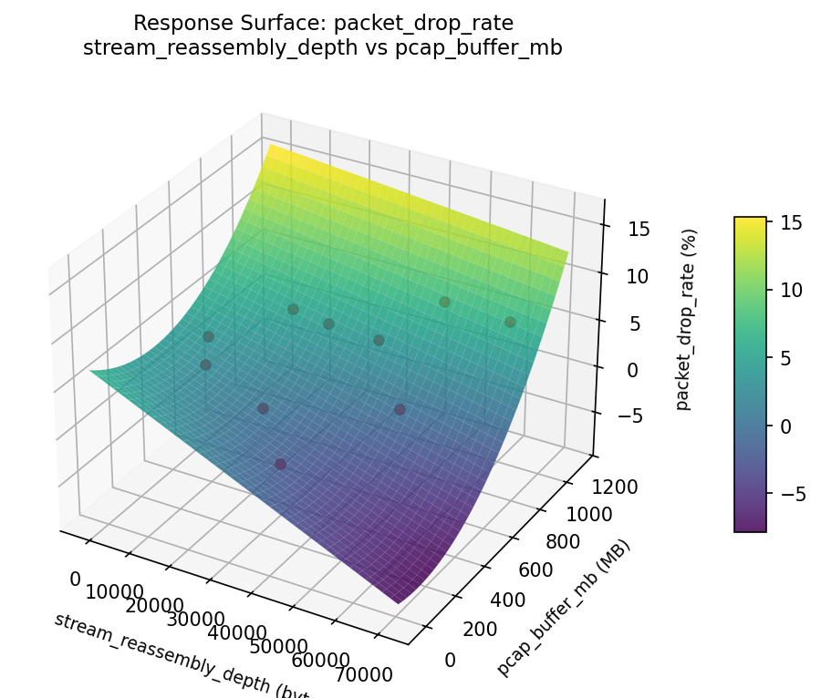
Full Analysis Output
=== Main Effects: detection_accuracy_pct ===
Factor Effect Std Error % Contribution
--------------------------------------------------------------
signature_pool_size 8.8000 0.9575 25.0%
pattern_match_depth 8.8000 0.9575 25.0%
stream_reassembly_depth 8.8000 0.9575 25.0%
pcap_buffer_mb 8.8000 0.9575 25.0%
=== Summary Statistics: detection_accuracy_pct ===
signature_pool_size:
Level N Mean Std Min Max
------------------------------------------------------------
11087.3 1 87.9000 0.0000 87.9000 87.9000
19860.7 1 86.0000 0.0000 86.0000 86.0000
25486 1 80.1000 0.0000 80.1000 80.1000
26113.2 1 79.2000 0.0000 79.2000 79.2000
33497.6 1 84.4000 0.0000 84.4000 84.4000
36143.4 1 83.1000 0.0000 83.1000 83.1000
45093.7 1 81.5000 0.0000 81.5000 81.5000
45455.5 1 85.3000 0.0000 85.3000 85.3000
5507.95 1 88.0000 0.0000 88.0000 88.0000
7647.87 1 83.5000 0.0000 83.5000 83.5000
pattern_match_depth:
Level N Mean Std Min Max
------------------------------------------------------------
1334.16 1 85.3000 0.0000 85.3000 85.3000
1514.88 1 80.1000 0.0000 80.1000 80.1000
1889.75 1 83.1000 0.0000 83.1000 83.1000
2440.86 1 87.9000 0.0000 87.9000 87.9000
2742.19 1 86.0000 0.0000 86.0000 86.0000
303.293 1 88.0000 0.0000 88.0000 88.0000
3296.06 1 79.2000 0.0000 79.2000 79.2000
3625.11 1 83.5000 0.0000 83.5000 83.5000
3944.2 1 81.5000 0.0000 81.5000 81.5000
691.127 1 84.4000 0.0000 84.4000 84.4000
stream_reassembly_depth:
Level N Mean Std Min Max
------------------------------------------------------------
11373.2 1 87.9000 0.0000 87.9000 87.9000
20941.5 1 81.5000 0.0000 81.5000 81.5000
24824.3 1 88.0000 0.0000 88.0000 88.0000
29436.4 1 84.4000 0.0000 84.4000 84.4000
35209.9 1 83.5000 0.0000 83.5000 83.5000
45724.2 1 85.3000 0.0000 85.3000 85.3000
48437.7 1 80.1000 0.0000 80.1000 80.1000
53982.9 1 86.0000 0.0000 86.0000 86.0000
62029 1 83.1000 0.0000 83.1000 83.1000
6440.35 1 79.2000 0.0000 79.2000 79.2000
pcap_buffer_mb:
Level N Mean Std Min Max
------------------------------------------------------------
1019.74 1 88.0000 0.0000 88.0000 88.0000
223.456 1 79.2000 0.0000 79.2000 79.2000
302.431 1 83.1000 0.0000 83.1000 83.1000
381.593 1 81.5000 0.0000 81.5000 81.5000
534.836 1 84.4000 0.0000 84.4000 84.4000
559.592 1 87.9000 0.0000 87.9000 87.9000
701.223 1 85.3000 0.0000 85.3000 85.3000
807.609 1 80.1000 0.0000 80.1000 80.1000
866.876 1 83.5000 0.0000 83.5000 83.5000
99.7001 1 86.0000 0.0000 86.0000 86.0000
=== Main Effects: packet_drop_rate ===
Factor Effect Std Error % Contribution
--------------------------------------------------------------
signature_pool_size 10.7500 1.1412 25.0%
pattern_match_depth 10.7500 1.1412 25.0%
stream_reassembly_depth 10.7500 1.1412 25.0%
pcap_buffer_mb 10.7500 1.1412 25.0%
=== Summary Statistics: packet_drop_rate ===
signature_pool_size:
Level N Mean Std Min Max
------------------------------------------------------------
11087.3 1 7.8100 0.0000 7.8100 7.8100
19860.7 1 10.2200 0.0000 10.2200 10.2200
25486 1 0.7600 0.0000 0.7600 0.7600
26113.2 1 -0.5300 0.0000 -0.5300 -0.5300
33497.6 1 5.3200 0.0000 5.3200 5.3200
36143.4 1 5.1200 0.0000 5.1200 5.1200
45093.7 1 1.7300 0.0000 1.7300 1.7300
45455.5 1 9.3900 0.0000 9.3900 9.3900
5507.95 1 4.5700 0.0000 4.5700 4.5700
7647.87 1 6.8400 0.0000 6.8400 6.8400
pattern_match_depth:
Level N Mean Std Min Max
------------------------------------------------------------
1334.16 1 9.3900 0.0000 9.3900 9.3900
1514.88 1 0.7600 0.0000 0.7600 0.7600
1889.75 1 5.1200 0.0000 5.1200 5.1200
2440.86 1 7.8100 0.0000 7.8100 7.8100
2742.19 1 10.2200 0.0000 10.2200 10.2200
303.293 1 4.5700 0.0000 4.5700 4.5700
3296.06 1 -0.5300 0.0000 -0.5300 -0.5300
3625.11 1 6.8400 0.0000 6.8400 6.8400
3944.2 1 1.7300 0.0000 1.7300 1.7300
691.127 1 5.3200 0.0000 5.3200 5.3200
stream_reassembly_depth:
Level N Mean Std Min Max
------------------------------------------------------------
11373.2 1 7.8100 0.0000 7.8100 7.8100
20941.5 1 1.7300 0.0000 1.7300 1.7300
24824.3 1 4.5700 0.0000 4.5700 4.5700
29436.4 1 5.3200 0.0000 5.3200 5.3200
35209.9 1 6.8400 0.0000 6.8400 6.8400
45724.2 1 9.3900 0.0000 9.3900 9.3900
48437.7 1 0.7600 0.0000 0.7600 0.7600
53982.9 1 10.2200 0.0000 10.2200 10.2200
62029 1 5.1200 0.0000 5.1200 5.1200
6440.35 1 -0.5300 0.0000 -0.5300 -0.5300
pcap_buffer_mb:
Level N Mean Std Min Max
------------------------------------------------------------
1019.74 1 4.5700 0.0000 4.5700 4.5700
223.456 1 -0.5300 0.0000 -0.5300 -0.5300
302.431 1 5.1200 0.0000 5.1200 5.1200
381.593 1 1.7300 0.0000 1.7300 1.7300
534.836 1 5.3200 0.0000 5.3200 5.3200
559.592 1 7.8100 0.0000 7.8100 7.8100
701.223 1 9.3900 0.0000 9.3900 9.3900
807.609 1 0.7600 0.0000 0.7600 0.7600
866.876 1 6.8400 0.0000 6.8400 6.8400
99.7001 1 10.2200 0.0000 10.2200 10.2200
Optimization Recommendations
=== Optimization: detection_accuracy_pct ===
Direction: maximize
Best observed run: #2
signature_pool_size = 29132.6
pattern_match_depth = 3194.63
stream_reassembly_depth = 57477.2
pcap_buffer_mb = 222.407
Value: 88.0
RSM Model (linear, R² = 0.5972, Adj R² = 0.2750):
Coefficients:
intercept +83.9638
signature_pool_size +1.6251
pattern_match_depth +1.0652
stream_reassembly_depth +2.3468
pcap_buffer_mb +1.7330
Predicted optimum (from linear model):
signature_pool_size = 45169.5
pattern_match_depth = 3867.57
stream_reassembly_depth = 45426.4
pcap_buffer_mb = 976.293
Predicted value: 88.5782
Model quality: Moderate fit — use predictions directionally, not precisely.
Factor importance:
1. signature_pool_size (effect: 8.8, contribution: 25.0%)
2. pattern_match_depth (effect: 8.8, contribution: 25.0%)
3. stream_reassembly_depth (effect: 8.8, contribution: 25.0%)
4. pcap_buffer_mb (effect: 8.8, contribution: 25.0%)
=== Optimization: packet_drop_rate ===
Direction: minimize
Best observed run: #3
signature_pool_size = 9412.85
pattern_match_depth = 2491.25
stream_reassembly_depth = 10640.2
pcap_buffer_mb = 457.635
Value: -0.53
RSM Model (linear, R² = 0.4997, Adj R² = 0.0994):
Coefficients:
intercept +5.2144
signature_pool_size +2.7439
pattern_match_depth -1.1250
stream_reassembly_depth +0.8059
pcap_buffer_mb +4.2514
Predicted optimum (from linear model):
signature_pool_size = 45169.5
pattern_match_depth = 3867.57
stream_reassembly_depth = 45426.4
pcap_buffer_mb = 976.293
Predicted value: 10.5333
Model quality: Weak fit — consider adding center points or using a different design.
Factor importance:
1. signature_pool_size (effect: 10.8, contribution: 25.0%)
2. pattern_match_depth (effect: 10.8, contribution: 25.0%)
3. stream_reassembly_depth (effect: 10.8, contribution: 25.0%)
4. pcap_buffer_mb (effect: 10.8, contribution: 25.0%)